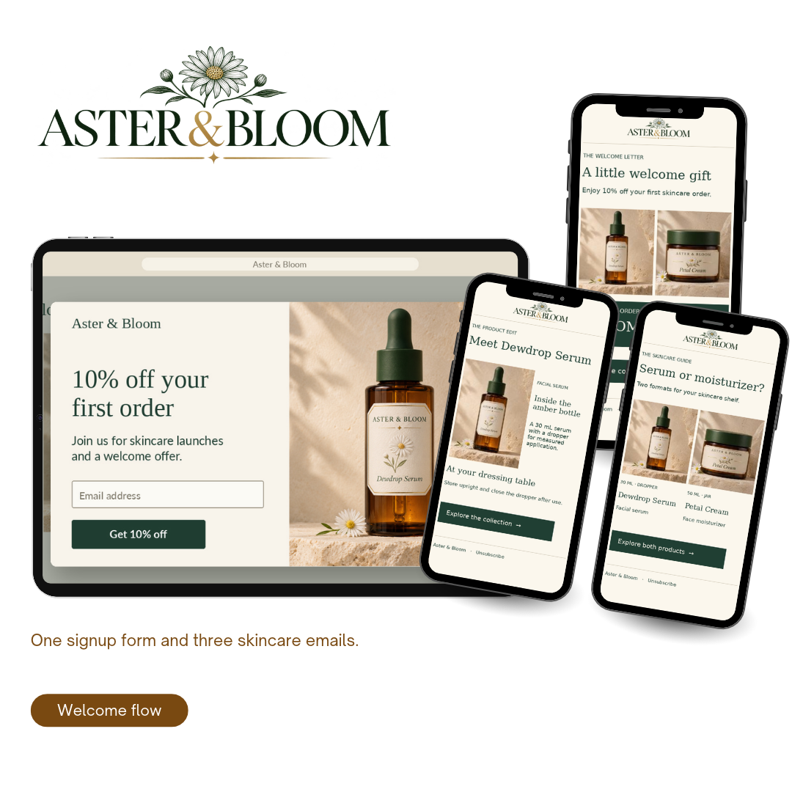

Completed portfolio build · Klaviyo draft
Aster & Bloom
A skincare popup offering 10% off, followed by a three-email welcome sequence with BLOOM10, Dewdrop Serum and a product comparison.
Read the case studyEmail & retention / 01
Signup forms and welcome journeys designed around what shoppers need next.
Portfolio / Email & retention
A relevant, published example from the current portfolio.

Completed portfolio build · Klaviyo draft
A skincare popup offering 10% off, followed by a three-email welcome sequence with BLOOM10, Dewdrop Serum and a product comparison.
Read the case studyThis example is a completed portfolio build configured in Klaviyo as a draft, not a live campaign performance claim.
What this service covers
From the first signup to a product discovery email, each message has a job to do. I build a clear journey and carry one brand identity across every touchpoint.
Signup forms and first-order offers
Klaviyo list-triggered welcome flows
Email copy, mobile layouts and QA